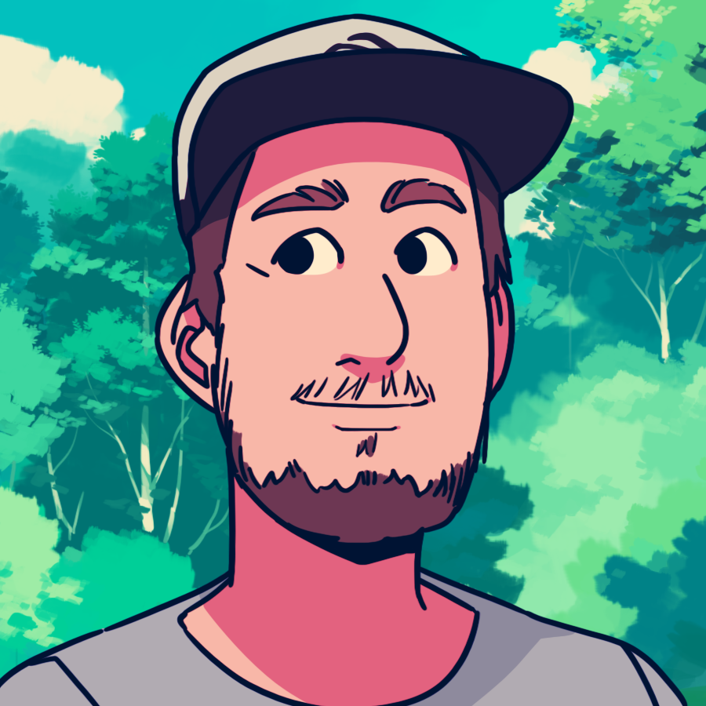

Yannick Lohse
+33 631 637 156
5 Cour Ilie Nastase, 67540 Ostwald

I am a developer with nine years experience working with various web technologies. Passionate about bringing products to life, I know a coherent user experience doesn't live solely in code, so I have also worked on UI and UX design for the past four years.
More than that, I am a learner who never shies away from the unknown if it can benefit the product. I am fluent in French (native) English and German, and I understand Spanish.
-
Cozy Cloud
Feb 2017 - now
-
Caldera
May 2013 - Feb 2017
-
Designing and coding a workflow management application in the cloud.
-
Spear-heading the transition to SaaS based products.
-
Designing, coding and shipping a printing app on major platforms (Windows, macOS, Linux, Android and iOS).
-
Coding a print-job tracking application for desktop.
-
Groupe ESC Troyes
Sep. 2010 - May 2013
-
Rebuilding the company’s main website (300+ pages).
-
Designing and building websites for public events and internal tools.
-
Creating, and delivering feedback on advertisement material.
-
Active participation in communication strategy and marketing meetings.
-
Kairos Media
Nov. 2009 - Sep. 2010
-
Maintaining and enhancing the fleet of existing sites.
-
Building new web sites to expand the business.
-
CAD Rechenzentrum
Summer 2008 & 2009
-
Two internships followed by summer jobs as a C# developer.
-
Building a web-based GIS.
-
Expanding an internal documentation generation tool.
-
Travian France
2006 - 2009
-
Admin of the official board.
-
Over 30 000 registered users.
-
Managing a 20 person team.
-
IUT of Troyes
2009 - 2010
-
License Professionnelle Ingénieurie de l’Internet et du Multimédia
-
TOEIC : 975/990
-
French Mini-Entrepreuneriat champion with our project «Le Jet»
-
IUT of Mulhouse
2007 - 2009
-
DUT Services et Réseaux de Communication
-
Lambert High School, Mulhouse
2004 - 2009
-
Baccalauréat (French High School Diploma), focus on Litterature - Honors «Assez bien»
-
Abitur (German High School Diploma)
-
First Certificate of English, delivered by the University of Cambridge
-
Front-end
-
Nine years of experience bringing designs to life with HTML and CSS.
-
Solid knowledge of javascript fundamentals and up to date with it's latest evolutions (ES6, HTML5 APIs, …).
-
I've worked on several large applications built with Angular 1, and then several more with built with React and Redux. i've used Vue for smaller side projects.
-
Back-end
-
Nine years experience with PHP, including work with frameworks such as CakePHP, FatFree, Symfony, Zend, …
-
Over four years experience with node.js, building various applications including multiplayer games and desktop apps.
-
Good knowledge of relational and NoSQL databases (mostly MySQL and MongoDB).
-
Familiar with C# and Java, dabbled in Ruby and Python.
-
Design
-
Four years experience designing responsive websites and applications.
-
Good knowledge of Adobe Photoshop, hate Illustrator but I sadly know how to use it.
-
Basic knowledge of Invision Studio.
-
Other
-
Mildly competent at using git after a few years of not really knwoing what I was doing.
-
Good knowledge of Docker. Familiar with AWS and similar platforms.
-
Never enjoyed fiddling with servers but knows how to do it.
-
Shipped several apps using Cordova/PhoneGap on all platforms, including medling with the plugins using Objective C, Swift and Java for Android.
-
Used nw.js to ship an app on multiple desktop platforms (it's the thing that came before Electron).
-
Interested in project management.
-
Comfortable with task runners and build tools in general.